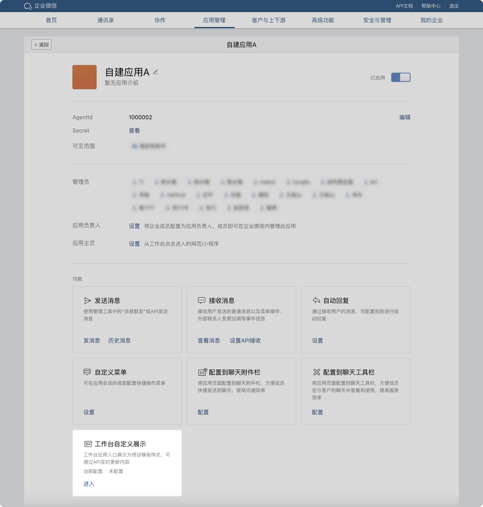
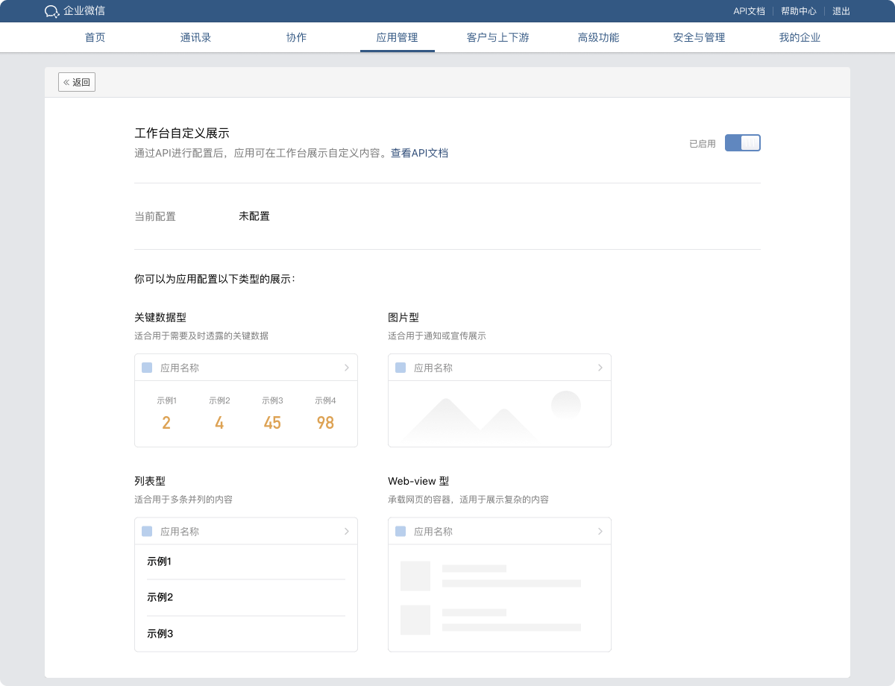
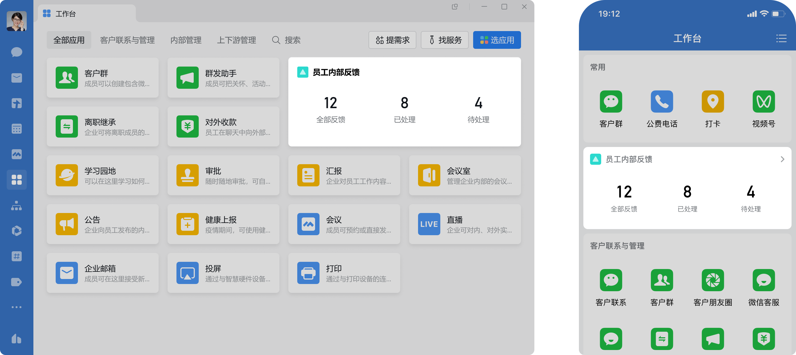
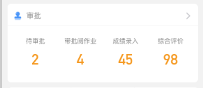
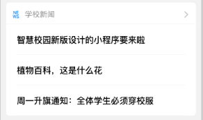
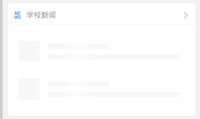

目录
在企业微信管理端启用工作台自定义展示后，可以通过接口配置应用在企业微信工作台的展示类型。具体可设置关键数据型、图片型、列表型以及webview型。操作流程如下方所示：
1. 在管理后台对应用启用工作台自定义展示
当前仅第三方应用、自建应用支持设置自定义展示。
操作流程：管理后台—应用管理—应用—启用自定义展示



2. 通过接口配置应用在企业微信客户端工作台的展示类型
首先需要通过“设置应用在工作台展示的模版”接口设置应用自定义模版类型。然后再通过“设置应用在用户工作台展示的数据”接口设置用户模版数据。
“设置应用在工作台展示的模版”同时也支持设置一个默认的企业级别的模版数据。在用户数据未设置的情况下，会展示企业级别的默认数据。
一个应用仅支持配置一种模版样式，应用中的数据展示支持根据不同的成员进行设置。
3. 展示样式示例

4. 模版类型数据结构
注：开发者需要根据应用主页配置的类型来设置所有模板类型中的跳转地址：
若应用主页跳转地址为网页，则仅支持配置jump_url；
若应用主页跳转地址为小程序，则仅支持pagepath；
若设置的跳转地址跟应用主页跳转地址类型不匹配，不同的客户端平台或者版本表现可能不一致。
例如：若应用主页跳转地址为网页时，以图片型号模板为例，设置的数据为：
{ "url":"xxxx", "jump_url":"http://www.qq.com" }点击复制
若应用主页跳转地址为小程序，设置的数据为：
{ "url":"xxxx", "pagepath":"pages/index" }点击复制
具体每个模板类型结构说明见以下说明：
4.1 关键数据型
{ "items":[ { "key":"待审批", "data":"2", "jump_url":"http://www.qq.com", "pagepath":"pages/index" }, { "key":"带批阅作业", "data":"4", "jump_url":"http://www.qq.com", "pagepath":"pages/index" }, { "key":"成绩录入", "data":"45", "jump_url":"http://www.qq.com", "pagepath":"pages/index" }, { "key":"综合评价", "data":"98", "jump_url":"http://www.qq.com", "pagepath":"pages/index" } ] }点击复制
参数说明：
| 参数 | 必须 | 说明 |
|---|---|---|
| items | 是 | 关键数据型数组，不超过4个 |
| items.key | 否 | 关键数据名称，需要设置在模版中。长度不超过64个字符 |
| items.data | 是 | 关键数据。长度不超过64个字符 |
| items.jump_url | 否 | 点击跳转url，若不填且应用设置了主页url，则跳转到主页url，否则跳到应用会话窗口。长度不超过1024个字符 。仅当应用主页为网页时配置生效，若应用主页为小程序，填写该字段不同的客户端平台或者版本表现可能不一致 |
| items.pagepath | 否 | 该字段填小程序pagepath，若未设置，跳到小程序主页。长度不超过1024个字符。仅当应用主页为小程序时配置生效，若应用主页为网页，填写该字段不同的客户端平台或者版本表现可能不一致 |
type为 "keydata"
在工作台展示效果如下：

4.2 图片型
{ "url":"xxxx", "jump_url":"http://www.qq.com", "pagepath":"pages/index" }点击复制
参数说明：
| 参数 | 必须 | 说明 |
|---|---|---|
| url | 是 | 图片url。图片的最佳比例为3.35:1 |
| jump_url | 否 | 点击跳转url。若不填且应用设置了主页url，则跳转到主页url，否则跳到应用会话窗口。仅当应用主页为网页时配置生效，若应用主页为小程序，填写该字段不同的客户端平台或者版本表现可能不一致 |
| pagepath | 否 | 若应用为小程序类型，该字段填小程序pagepath，若未设置，跳到小程序主页。仅当应用主页为小程序时配置生效，若应用主页为网页，填写该字段不同的客户端平台或者版本表现可能不一致 |
type为 "image"
在工作台展示效果如下：
4.3 列表型
{ "items":[ { "title":"智慧校园新版设计的小程序要来啦", "jump_url":"http://www.qq.com", "pagepath":"pages/index" }, { "title":"植物百科，这是什么花", "jump_url":"http://www.qq.com", "pagepath":"pages/index" }, { "title":"周一升旗通知，全体学生必须穿校服", "jump_url":"http://www.qq.com", "pagepath":"pages/index" } ] }点击复制
参数说明：
| 参数 | 必须 | 说明 |
|---|---|---|
| items | 是 | 列表型数组，不超过3个 |
| items.title | 是 | 列表显示文字，不超过128个字节 |
| items.jump_url | 否 | 点击跳转url，若不填且应用设置了主页url，则跳转到主页url，否则跳到应用会话窗口。仅当应用主页为网页时配置生效，若应用主页为小程序，填写该字段不同的客户端平台或者版本表现可能不一致 |
| items.pagepath | 否 | 该字段填小程序pagepath，若未设置，跳到小程序主页。仅当应用主页为小程序时配置生效，若应用主页为网页，填写该字段不同的客户端平台或者版本表现可能不一致 |
type为 "list"
在工作台展示效果如下：

4.4 webview型
{ "url":"http://www.qq.com", "jump_url":"http://www.qq.com", "pagepath":"pages/index", "height":"single_row", "hide_title":true, "enable_webview_click":true }点击复制
参数说明：
| 参数 | 必须 | 说明 |
|---|---|---|
| url | 是 | 渲染展示的url |
| jump_url | 否 | 点击跳转url。若不填且应用设置了主页url，则跳转到主页url，否则跳到应用会话窗口。如果enable_webview_click为true，则jump_url失效，点击不再跳转。仅当应用主页为网页时配置生效，若应用主页为小程序，填写该字段不同的客户端平台或者版本表现可能不一致 |
| pagepath | 否 | 该字段填小程序pagepath，若未设置，跳到小程序主页。仅当应用主页为小程序时配置生效，若应用主页为网页，填写该字段不同的客户端平台或者版本表现可能不一致 |
| height | 否 | 高度。可以有两种选择：single_row与double_row。当为single_row时，高度为106px（如果隐藏标题则为147px）。当为double_row时，高度固定为171px（如果隐藏标题则为212px）。默认值为double_row |
| hide_title | 否 | 是否要隐藏展示了应用名称的标题部分，默认值为false |
| enable_webview_click | 否 | 是否开启webview内的链接跳转能力，默认值为false。注意：开启之后，会使jump_url失效。链接跳转仅支持以下schema方式：wxwork://openurl?url=xxxx，注意url需要进行编码。参考示例：<a href="wxwork://openurl?url=https%3A%2F%2Fwork.weixin.qq.com%2F">今日要闻</a> |
type为 "webview"
在工作台展示效果如下：

5. 设置应用在工作台展示的模版
请求说明：该接口指定应用自定义模版类型。同时也支持设置企业默认模版数据。若type指定为 "normal" 则为取消自定义模式，改为普通展示模式
请求方式：POST（HTTPS）
请求地址：https://qyapi.weixin.qq.com/cgi-bin/agent/set_workbench_template?access_token=ACCESS_TOKEN
请求示例
{ "agentid":1000005, "type":"image", "image":{ "url":"xxxx", "jump_url":"http://www.qq.com" }, "replace_user_data":true }点击复制
参数说明：
| 参数 | 必须 | 说明 |
|---|---|---|
| access_token | 是 | 调用接口凭证 |
| type | 是 | 模版类型，目前支持的自定义类型包括 "keydata"、 "image"、 "list"、 "webview" 。若设置的type为 "normal",则相当于从自定义模式切换为普通宫格或者列表展示模式 |
| agentid | 是 | 应用id |
| keydata | 否 | 若type指定为 "keydata"，且需要设置企业级别默认数据，则需要设置关键数据型模版数据,数据结构参考“关键数据型” |
| image | 否 | 若type指定为 "image"，且需要设置企业级别默认数据，则需要设置图片型模版数据,数据结构参考“图片型” |
| list | 否 | 若type指定为 "list"，且需要设置企业级别默认数据，则需要设置列表型模版数据,数据结构参考“列表型” |
| webview | 否 | 若type指定为 "webview"，且需要设置企业级别默认数据，则需要设置webview型模版数据,数据结构参考“webview型” |
| replace_user_data | 否 | 是否覆盖用户工作台的数据。设置为true的时候，会覆盖企业所有用户当前设置的数据。若设置为false,则不会覆盖用户当前设置的所有数据。默认为false |
权限说明：
可设置当前凭证对应的应用；
返回结果 ：
{ "errcode":0, "errmsg":"ok" }点击复制
6. 获取应用在工作台展示的模版
请求方式：POST（HTTPS）
请求地址：https://qyapi.weixin.qq.com/cgi-bin/agent/get_workbench_template?access_token=ACCESS_TOKEN
请求示例：
{ "agentid":1000005 }点击复制
参数说明：
| 参数 | 必须 | 说明 |
|---|---|---|
| access_token | 是 | 调用接口凭证 |
| agentid | 是 | 应用id |
权限说明：
可设置当前凭证对应的应用；
返回结果 ：
{ "errcode":0, "errmsg":"ok", "type":"image", "image":{ "url":"xxxx", "jump_url":"http://www.qq.com" }, "replace_user_data":true }点击复制
7. 设置应用在用户工作台展示的数据
请求方式：POST（HTTPS）
请求地址：https://qyapi.weixin.qq.com/cgi-bin/agent/set_workbench_data?access_token=ACCESS_TOKEN
请求示例
{ "agentid":1000005, "userid":"test", "type":"keydata", "keydata":{ "items":[ { "key":"待审批", "data":"2", "jump_url":"http://www.qq.com" }, { "key":"带批阅作业", "data":"4", "jump_url":"http://www.qq.com" }, { "key":"成绩录入", "data":"45", "jump_url":"http://www.qq.com" }, { "key":"综合评价", "data":"98", "jump_url":"http://www.qq.com" } ] } }点击复制
参数说明：
| 参数 | 必须 | 说明 |
|---|---|---|
| access_token | 是 | 调用接口凭证 |
| agentid | 是 | 应用id |
| userid | 是 | 需要设置的用户的userid |
| type | 是 | 目前支持 "keydata"、 "image"、 "list" 、"webview" |
| keydata | 否 | 若type指定为 "keydata"，则需要设置关键数据型模版数据,数据结构参考“关键数据型” |
| image | 否 | 若type指定为 "image"，则需要设置图片型模版数据，数据结构参考“图片型” |
| list | 否 | 若type指定为 "list"，则需要设置列表型模版数据，数据结构参考“列表型” |
| webview | 否 | 若type指定为 "webview"，则需要设置webview型模版数据，数据结构参考“webview数据型” |
权限说明：
可设置当前凭证对应的应用；设置的userid必须在应用可见范围
每个用户每个应用接口限制10次/分钟
8. 批量设置应用在用户工作台展示的数据
请求方式：POST（HTTPS）
请求地址：https://qyapi.weixin.qq.com/cgi-bin/agent/batch_set_workbench_data?access_token=ACCESS_TOKEN
请求示例
{ "agentid": 1000005, "userid_list":["userid1","userid2"], "data": { "type": "keydata", "keydata": { "items": [ { "key": "待审批", "data": "0", "jump_url": "http://www.qq.com" } ] } } }点击复制
参数说明：
| 参数 | 必须 | 说明 |
|---|---|---|
| access_token | 是 | 调用接口凭证 |
| agentid | 是 | 应用id |
| userid_list | 是 | 需要设置的用户userid列表，最多1000个 |
| data | 是 | 用户设置的数据，具体的结构参考UserData结构说明 |
UserData说明：
| 参数 | 必须 | 说明 |
|---|---|---|
| type | 是 | 目前支持 "keydata"、 "image"、 "list" 、"webview" |
| keydata | 否 | 若type指定为 "keydata"，则需要设置关键数据型模版数据,数据结构参考“关键数据型” |
| image | 否 | 若type指定为 "image"，则需要设置图片型模版数据，数据结构参考“图片型” |
| list | 否 | 若type指定为 "list"，则需要设置列表型模版数据，数据结构参考“列表型” |
| webview | 否 | 若type指定为 "webview"，则需要设置webview型模版数据，数据结构参考“webview数据型” |
权限说明：
可设置当前凭证对应的应用；设置的userid必须在应用可见范围
每个应用接口限制100000人次/分钟
9. 获取应用在用户工作台展示的数据
请求方式：POST（HTTPS）
请求地址：https://qyapi.weixin.qq.com/cgi-bin/agent/get_workbench_data?access_token=ACCESS_TOKEN
请求示例
{ "agentid": 1000005, "userid": "userid1" }点击复制
参数说明：
| 参数 | 必须 | 说明 |
|---|---|---|
| access_token | 是 | 调用接口凭证 |
| agentid | 是 | 应用id |
| useridt | 是 | 用户userid |
请求回包
{ "errcode": 0, "errmsg":"ok", "data": { "type": "keydata", "keydata": { "items": [ { "key": "待审批", "data": "2", "jump_url": "http://www.qq.com/" }, { "key": "带批阅作业", "data": "4", "jump_url": "http://www.qq.com" }, { "key": "成绩录入", "data": "45", "jump_url": "http://www.qq.com" }, { "key": "综合评价", "data": "98", "jump_url": "http://www.qq.com" } ] } } }点击复制
参数说明：
| 参数 | 说明 |
|---|---|
| errcode | 错误码 |
| errmsg | 错误描述 |
| data | 用户设置的数据列表，具体的结构参考UserData结构说明 |
注：若是设置了应用的模板，并且在设置用户数据后设置，且配置了"replace_user_data":true，应用数据会覆盖个人数据，此时返回应用设置的数据。
10. 修改设置工作台自定义开关事件推送
管理员在管理端应用详情页的自定义工作台页面启用或者停用自定义工作台模式时，会推送接收修改设置工作台自定义开关事件推送到应用的回调url上（如果是第三方应用为数据回调url）。事件推送处理过程详见接收消息与事件。 修改设置工作台自定义开关事件推送XML报文格式如下：
<xml> <ToUserName><![CDATA[toUser]]></ToUserName> <FromUserName><![CDATA[FromUser]]></FromUserName> <CreateTime>123456789</CreateTime> <MsgType><![CDATA[event]]></MsgType> <Event><![CDATA[switch_workbench_mode]]></Event> <Mode>1</Mode > <AgentID>1</AgentID> </xml>点击复制
参数说明：
| 参数 | 说明 |
|---|---|
| ToUserName | 企业微信CorpID |
| FromUserName | 此处固定为sys |
| CreateTime | 消息创建时间（整型） |
| MsgType | 消息类型，此时固定为：event |
| Event | 事件类型：switch_workbench_mode，切换工作台自定义模式 |
| Mode | 1表示开启工作台自定义模式，0表示关闭工作台自定义模式 |
| AgentID | 企业应用的id，整型。可在应用的设置页面查看 |